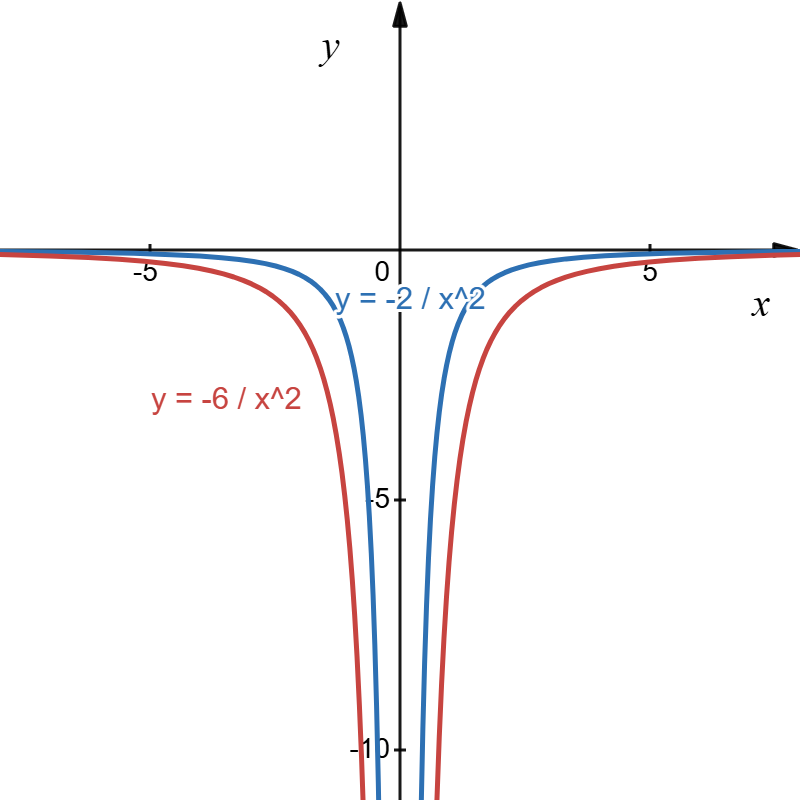

On the same axes:
• Asymptotes are at
x = 0 (y-axis) and
y = 0 (x-axis) — the curve approaches but never touches these axes
• Sketch
y = −2/
x2 as an inverted U-shaped curve below the x-axis
• Sketch
y = −6/
x2 as an inverted U-shaped curve below the x-axis, lower than the first
• Label both curves clearly
• Note: Both curves approach the asymptotes but never touch them

The curves are inverted U-shaped and symmetric about the y-axis. Larger |k| values produce curves that are lower down.